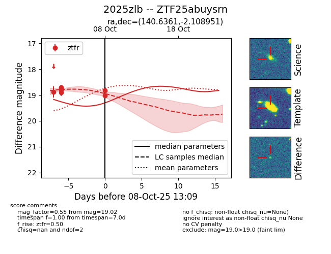
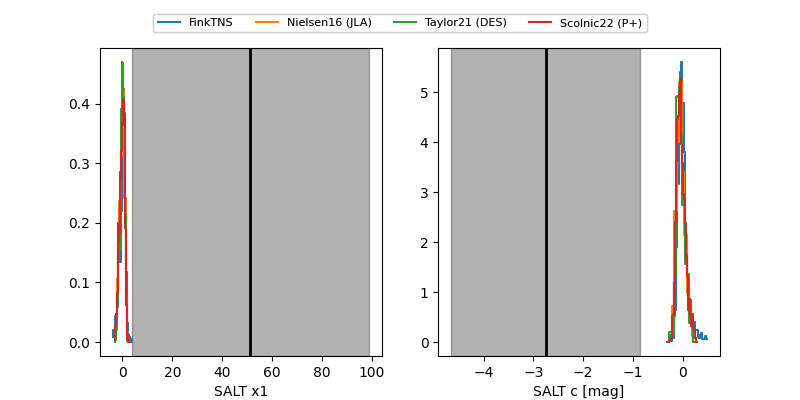

FINK: ZTF25abuysrn
Lasair: ZTF25abuysrn
ALeRCE: ZTF25abuysrn
TNS: 2025zlb
YSE: 2025zlb
ZTF25abuysrn (ztf,fink)
2025zlb (tns,yse)
equatorial (ra, dec) = (140.6361,-2.10895)
galactic (l, b) = (234.4792,+31.87336)


last ztfr=19.02
7 ztfr detections